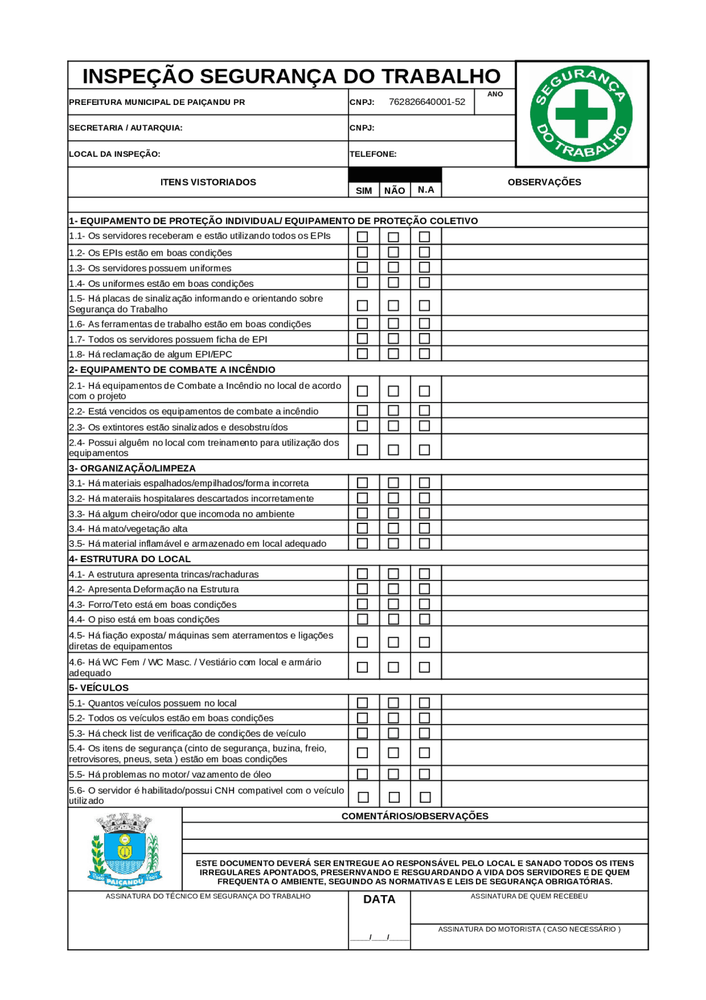
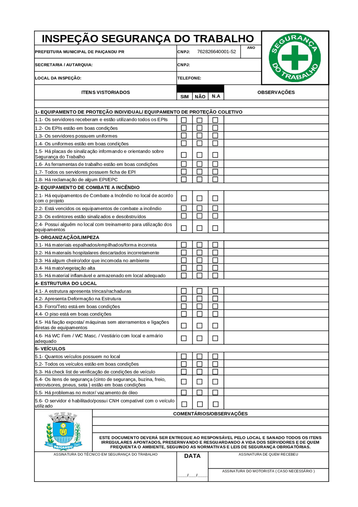

Dashboard de Segurança (Power BI)
Painel com indicadores de acidentes, quase-acidentes, inspeções e treinamentos. Integração com forms e planilhas.
BIIndicadoresSST
Incorporo tecnologia e prevenção para criar ambientes de trabalho mais seguros, eficientes e em conformidade. Experiência em suporte, redes e segurança da informação, com sólida atuação em SST (NRs, PPRA/PGR, treinamentos e cultura de segurança).
Resumo: Profissional com formação em Gestão de Segurança do Trabalho e atuação em TI. Experiência com suporte a usuários, administração de redes e implantação de boas práticas de SST no chão de fábrica e em escritórios. Foco em dados, indicadores e melhoria contínua.
❆ Principais atividades e resultados:
❆ Projetos de inclusão digital, capacitando alunos em redes e sistemas de computadores
por meio da tecnologia Thin Client.
❆ Manutenção preventiva e corretiva em redes e equipamentos, além de ministrar treinamentos práticos em ferramentas
computacionais e de escritório
(Word, Excel, PowerPoint e gráficos).
❆ Aplicar dinâmicas de grupo voltadas para integração, fortalecimento de
competências interpessoais com objetivo profissional.
❆ Contribuí para a formação profissional de diversos alunos,
ampliando suas oportunidades de empregabilidade e inclusão social.
❆ Atuação híbrida em TI: atendimento a usuários, administração básica de
rede e servidor windows.
❆ Responsável pela gestão do almoxarifado, incluindo solicitação de pedidos, recebimento e conferência de notas fiscais;
❆ Lançamento e controle de estoque em sistema informatizado, garantindo rastreabilidade e organização dos materiais;
❆ Realização de inventários periódicos para assegurar a acuracidade do estoque;
❆ Identificação, separação e solicitação de troca de materiais não conformes.
I. Fiscalização Ambiental
✦ Inspecionar áreas urbanas e rurais para verificar irregularidades ambientais.
✦ Fiscalizar desmatamento, queimadas, poluição
sonora, do ar, do solo e da água.
✦ Verificar o cumprimento de leis ambientais, licenças e autorizações.
II. Proteção e Preservação
❂ Apoiar ações de reflorestamento, manejo sustentável e conservação da biodiversidade.
❂ Colaborar em programas de educação ambiental e
sensibilização da comunidade.
III. Prevenção e Resposta a Desastre Ambiental
❉ Atuar em casos de desastres naturais e tecnológicos (enchentes,
incêndios florestais, vazamentos de produtos químicos etc.).
❉ Executar medidas de prevenção e mitigação de riscos ambientais.
IV. Apoio Técnico e Administrativo
✥ Elaborar relatórios, autos de infração e pareceres técnicos.
✥ Participar de levantamentos e monitoramentos
ambientais (fauna, flora, qualidade da água, solo e ar).
✥ Auxiliar em projetos ambientais junto a órgãos públicos e privados.
V. Integração Interagências
✠ Trabalhar em conjunto com órgãos como IBAMA, Polícia Militar Ambiental, Corpo de Bombeiros.
✠ Apoiar
operações conjuntas de fiscalização e segurança em áreas de risco.
Painel com indicadores de acidentes, quase-acidentes, inspeções e treinamentos. Integração com forms e planilhas.

Implantação de rede cabeada + Wi‑Fi com segmentação VLAN, VPN e backup automatizado para NAS.


Um sistema simples de autenticação com HTML, CSS e JavaScript.
Ver Código

Site responsivo para mostrar meus trabalhos de desenvolvimento web.
Ver CódigoPrefere e‑mail, WhatsApp ou LinkedIn? Respondo rápido 🙂